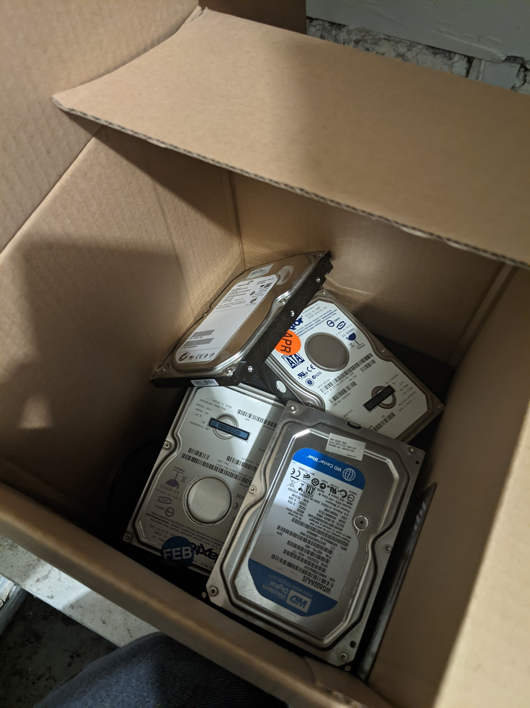
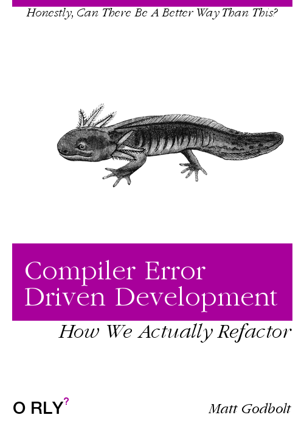

C++'s Superpower
Matt Godbolt — @mattgodbolt
cppp.fr December 2021
C++'s Superpower
What could it be?
- Ubiquity
- Performance
- Multi-paradigm
- Clear object lifetime
Surely not?
- Undefined behaviour
- Wrong defaults
- Legacy support
- Confusing syntax
Backwards compatibility!
The goal
- Take 25-year-old code
- Port to modern C++17
- Incrementally!
- Why so important?
But Matt,
where will you find 25-year-old code?
1996
MUDs!
What is a MUD?
- Multi-User Dungeon
- Text-based
- Dungeons & Dragons
- Multiplayer
- Raw TCP clients
Xania

The Temple Square This is the most southern end of the Temple of Isca. The surface of the marble flooring has been chipped and worn by the thousands of feet which have trampled through here since Midgaard was founded. To the north, a fine set of curved steps opens before you, leading towards the sacred altar. The centre of activity in this city is immediately south of you, at Market Square. You hear faint sounds of battle high above you and wonder why anyone would wish to fight in this fair city. [Exits: north east south west up] A small white fountain gushes forth here. A verminous gutter rat eyes you greedily and gnashes its teeth. --> kill rat Your stab does UNSPEAKABLE things to a gutter rat's head! A gutter rat is DEAD!! You receive 0 experience points. A gutter rat hits the ground ... DEAD. A gutter rat's severed head plops on the ground. Etaine is unimpressed by your sacrifice but grants you a single gold coin. Faramir gossips 'greetings!' --> w Entrance to Cleric's Guild The entrance hall is a small modest room, reflecting the true nature of the Clerics. The exit leads east to the temple square. A small entrance to the bar is in the northern wall. [Exits: north east] A vagabond is here, looking for victims. A knight templar is guarding the entrance. --> look vagabond He looks pretty mean. The vagabond is in excellent condition. The vagabond is using: <worn on body> a hard leather jerkin <worn around wrist> a leather bracer <wielded> a small sword
150 [||||||||||] 184/184 1609> w 150 [||||||||||] 184/184 1609> look vagabond 150 [||||||||||] 184/184 1609>
What is a MUD?
A giant text processor!
Groundwork
Groundwork
| Language | Files | Comments | Lines of Code |
|---|---|---|---|
| C | 67 | 4524 | 50977 |
| C++ | 6 | 54 | 699 |
| Perl/make | 8 | 180 | 717 |
Groundwork
gitCMakeclang-format-Wall -Wextra -fsanitize=- conan
- Run & test!
Demo!
The C++-i-fication
$ rename .c .cpp *.c
$ rename .h .hpp *.h
$ ninja
...
Pop quiz!
Pop quiz!
Pop quiz!
#define CLASS_MAGE 0
#define CLASS_CLERIC 1
// etc...
struct char_data {
// ...
int class; /* what class this character is */
// ...
};
// ...
/* Display the current flags */
void display_flags (char *template, CHAR_DATA *ch, int current_val);
Process
- Small change
- Test
- Leave TODOs
Process
- CEDD
- JRIASWHDD
- TDD
How to improve?
struct area_data { // class? private?
struct area_data *next; // !
char *name; // const/c-style
sh_int age;
sh_int nplayer;
bool empty;
char *areaname; // const/c-style
char *filename; // const/c-style
int vnum;
};
// Unnecessary!
typedef struct area_data AREA_DATA;
extern AREA_DATA *areas; // Global
- Hand-rolled linked list
- Mutable strings
- C-style strings!
- Unnecessary
typedef - Global!
- Encapsulation,
class
Simple fix
struct area_data {
struct area_data *next;
// ...
};
typedef struct area_data AREA_DATA;
Simple fix
struct AREA_DATA {
AREA_DATA *next;
// ...
};
Changing an element
- Build
- Run
- Manual test
Changing an element
struct AREA_DATA {
AREA_DATA *next;
char *name;
char *areaname;
char *filename;
// ...
};
Changing an element
struct AREA_DATA {
AREA_DATA *next;
std::string name; // Look ma, I'm C++ now!
char *areaname;
char *filename;
// ...
};
CEDD

Changing an element
struct AREA_DATA {
AREA_DATA *next;
std::string name;
// ...
};
void report_area(AREA_DATA *pArea) {
char buf[MAX_STRING_LENGTH];
sprintf(buf, "Area: %s\n", pArea->name);
// ...
}
warning: format '%s' expects argument of type 'char*',
but argument 3 has type 'const string'
| sprintf(buf, "Area: %s\n", pArea->name);
| ~^
| |
| char*
Changing an element
void report_area(AREA_DATA *pArea) {
char buf[MAX_STRING_LENGTH];
sprintf(buf, "Area: %s\n", pArea->name);
// ...
}
Changing an element
void report_area(AREA_DATA *pArea) {
char buf[MAX_STRING_LENGTH];
sprintf(buf, "Area: %s\n", pArea->name.c_str());
// ...
}
Changing an element
/* Adds a line of text to the buffer, formatted. */
void buffer_addline_fmt(BUFFER *buffer, const char *text, ...);
Changing an element
/* Adds a line of text to the buffer, formatted. */
[[gnu::format(printf, 2, 3)]]
void buffer_addline_fmt(BUFFER *buffer, const char *text, ...);
Changing an element
JRIASWHDD
Just run it and see what happens driven development
Changing an element
==1090996==ERROR: LeakSanitizer: detected memory leaks Direct leak of 10 byte(s) in 1 object(s) allocated from: #0 in __interceptor_strdup (./xania/out/debug/bin/xania+0x1c3d017) #1 in load_area(_IO_FILE*, char *) ./xania/src/db.cpp:349 #2 in boot_db() ./xania/src/db.cpp:301 ...
Changing an element
struct AREA_DATA {
AREA_DATA *next;
std::string name;
// ...
};
char *fread_string(FILE *fp); /* Read a string into a static buffer */
char *str_dup(char *str_to_duplicate); /* duplicates string with malloc */
void parse_area(AREA_DATA *pArea, FILE *fp) {
pArea->name = str_dup(fread_string(fp));
// ...rest of area parsing
}
Changing an element
void parse_area(AREA_DATA *pArea, FILE *fp) {
pArea->name = str_dup(fread_string(fp));
// ...rest of area parsing
}
Changing an element
void parse_area(AREA_DATA *pArea, FILE *fp) {
pArea->name = fread_string(fp);
// ...rest of area parsing
}
And so on
struct AREA_DATA {
AREA_DATA *next;
std::string name;
char *areaname;
char *filename;
// ...
};
And so on
struct AREA_DATA {
AREA_DATA *next;
std::string name;
std::string areaname;
std::string filename;
// ...
};
What's next?
struct AREA_DATA {
AREA_DATA *next;
std::string name;
std::string areaname;
std::string filename;
// ...
};
extern AREA_DATA *areas;
STL-i-fication
struct AREA_DATA {
std::string name;
std::string areaname;
std::string filename;
// ...
};
// TODO(#47): find a way to de-global this.
extern std::vector<AREA_DATA> areas;
STL-i-fication
void load_area(FILE *fp) {
AREA_DATA area{};
parse_area(&area, fp);
areas.emplace_back(std::move(area));
}
STL-i-fication
ERROR: AddressSanitizer: heap-use-after-free on address READ of size 2 at xxx188a2 thread T0 #0 in reset_room(Room*) ./xania/src/db.cpp:1037 #1 in reset_area() ./xania/src/db.cpp:985 ... xxx188a2 is located 34 bytes inside of 128-byte region [xxx18880,xxx18900) freed by thread T0 here: #0 in operator delete(void*, unsigned long) #1 in __gnu_cxx::new_allocator<Area>::deallocate(Area*, unsigned long) #2 in std::allocator_traits<std::allocator<Area> >::deallocate... ... previously allocated by thread T0 here: #0 in operator new(unsigned long) #1 in __gnu_cxx::new_allocator<Area>::allocate(unsigned long, void const*) #2 in std::allocator_traits<std::allocator<Area> >::allocate... ... SUMMARY: heap-use-after-free ./xania/src/db.cpp:1037 in reset_room(Room*)
STL-i-fication
struct ROOM_DATA {
//...
AREA_DATA *area;
//...
};
void reset_room(ROOM_DATA *room) {
if (room->area->nplayer > 0) {
return;
}
// ...
}
Need pointer stability
STL-i-fication
struct AREA_DATA {
std::string name;
std::string areaname;
std::string filename;
// ...
};
// TODO(#47): find a way to de-global this.
// TODO(#48): try and remove need for pointer stability.
std::vector<std::unique_ptr<AREA_DATA>> areas;
Class-i-fy
struct→class- Make all members
public: - One at a time:
- make private
- add accessors
Class-i-fy
struct AREA_DATA {
std::string name;
std::string areaname;
std::string filename;
// ...
};
Class-i-fy
class AREA_DATA {
public:
std::string name;
std::string areaname;
std::string filename;
// ...
};
Class-i-fy
class AREA_DATA {
std::string name_;
public:
std::string areaname;
std::string filename;
[[nodiscard]] const std::string &name() const { return name_; }
// ...
};
Class-i-fy
class AREA_DATA {
std::string name_;
public:
std::string areaname;
std::string filename;
[[nodiscard]] const std::string &name() const { return name_; }
void parse(FILE *fp);
// ...
};
Class-i-fy
class AREA_DATA {
std::string name_;
std::string area_name_;
public:
std::string filename;
[[nodiscard]] const std::string &name() const { return name_; }
[[nodiscard]] const std::string &areaname() const { return area_name_; }
void parse(FILE *fp);
// ...
};
Class-i-fy
class AREA_DATA {
std::string name_;
std::string area_name_;
std::string filename_;
public:
[[nodiscard]] const std::string &name() const { return name_; }
[[nodiscard]] const std::string &areaname() const { return area_name_; }
[[nodiscard]] const std::string &filename() const { return filename_; }
void parse(FILE *fp);
// ...
};
Class-i-fy
- Move functionality
parse_area→Area::parse- Write tests!
- Rename fields & accessors
Class-i-fied
class Area {
std::string description_;
ush_int num_players_{};
bool empty_since_last_reset_{};
int min_level_{0};
int max_level_{MAX_LEVEL};
std::string short_name_;
Area() = default;
void reset();
public:
// ...continued on next panel -->
static Area parse(
FILE *fp,
std::string filename);
void player_entered();
void player_left();
void update();
[[nodiscard]]
const auto &short_name() const {
return short_name_;
}
// etc...
};
Test
TEST_CASE("area loading") {
test::MemFile fp(R"(ignored~
Short name~
{ 1 50} TheMoog Some kind of area~
6200 6399)");
SECTION("should parse") {
auto area = Area::parse(fp.file(), "bob");
CHECK(area.filename() == "bob");
CHECK(area.short_name() == "Short name");
CHECK(area.description() == "{ 1 50} TheMoog Some kind of area");
CHECK(area.min_level() == 1);
CHECK(area.max_level() == 50);
}
}
String manipulation
String manipulation
char *capitalize(const char *str) {
static char strcap[MAX_STRING_LENGTH];
int i;
for (i = 0; str[i] != '\0'; i++)
strcap[i] = LOWER(str[i]);
strcap[i] = '\0';
strcap[0] = UPPER(strcap[0]);
return strcap;
}
String manipulation
SECTION("capitalize") {
CHECK(capitalize("") == ""s);
CHECK(capitalize("a") == "A"s);
CHECK(capitalize("A") == "A"s);
CHECK(capitalize("a monkey") == "A monkey"s);
CHECK(capitalize("A MONKEY") == "A monkey"s);
CHECK(capitalize("a MonkeY") == "A monkey"s);
}
ZOMBIES
String manipulation
std::string capitalize(const char *str) {
std::string result;
result.resize(strlen(str));
for (int i = 0; i < strlen(str); i++)
result[i] = std::tolower(str[i]);
result[0] = std::toupper(result[0]);
return result;
}
String manipulation
std::string capitalize(const char *str) {
if (!*str)
return "";
std::string result;
std::transform(
str, str + strlen(str),
std::back_inserter(result),
[](char c) -> char {
return std::tolower(c);
}
);
return result;
}
String manipulation
auto capitalize(std::string_view text) {
return text
| ranges::view::enumerate
| ranges::view::transform(
[](const auto &pair) -> char {
return pair.first == 0 ? std::toupper(pair.second)
: std::tolower(pair.second);
}
)
| ranges::to<std::string>;
}
String manipulation
auto capitalize(std::string_view text) {
return ranges::view::concat(
text | ranges::view::take(1) | ranges::view::transform(toupper),
text | ranges::view::drop(1) | ranges::view::transform(tolower)
) | ranges::to<std::string>
}
String manipulation
- to uppercase/lowercase
- whitespace trimming
- case insensitive matches
- prefixes/suffixes
- parsing
String manipulation
bool matches_inside(const char *astr, const char *bstr) {
char c0;
if ((c0 = LOWER(astr[0])) == '\0')
return true;
int sstr1 = strlen(astr);
int sstr2 = strlen(bstr);
for (int ichar = 0; ichar <= sstr2 - sstr1; ichar++) {
if (c0 == LOWER(bstr[ichar]) && has_prefix(astr, bstr + ichar))
return true;
}
return false;
}
String manipulation
bool matches_inside(std::string_view needle, std::string_view haystack) {
auto needle_low = needle | ranges::views::transform(tolower);
auto haystack_low = haystack | ranges::views::transform(tolower);
return !ranges::search(haystack_low, needle_low).empty();
}
More stuff
int armor[MAX_AC];
// ...
for (int i = 0; i < MAX_AC; ++i)
armor[i] = 0;
// ...
for (int i = 0; i < MAX_AC; ++i)
armor[i] = -1;
std::array<int, MAX_AC> armour {};
// ...
ranges::fill(armour, -1);
String formatting
String formatting
char buf[MAX_STRING_LENGTH];
sprintf(buf, "Your gain is: %d/%d hp, %d/%d m, %d/%d mv %d/%d prac.\n",
add_hp, ch->max_hit, add_mana, ch->max_mana,
add_move, ch->max_move, add_prac, ch->practice);
send_to_player(ch, buf);
String formatting
char buf[MAX_STRING_LENGTH];
snprintf(buf, sizeof(buf),
"Your gain is: %d/%d hp, %d/%d m, %d/%d mv %d/%d prac.\n",
add_hp, ch->max_hit, add_mana, ch->max_mana,
add_move, ch->max_move, add_prac, ch->practice);
send_to_player(ch, buf);
String formatting
void Char::send_to(CHAR *ch, const char *fmt, ...);
ch->send_to(
"Your gain is: %d/%d hp, %d/%d m, %d/%d mv %d/%d prac.\n",
add_hp, ch->max_hit, add_mana, ch->max_mana,
add_move, ch->max_move, add_prac, ch->practice);
String formatting
[[gnu::format(printf, 2, 3)]]
void Char::send_to(CHAR *ch, const char *fmt, ...);
ch->send_to(
"Your gain is: %d/%d hp, %d/%d m, %d/%d mv %d/%d prac.\n",
add_hp, ch->max_hit, add_mana, ch->max_mana,
add_move, ch->max_move, add_prac, ch->practice);
String formatting
void Char::send_to(std::string_view txt);
template <typename... Args>
void Char::send_to(std::string_view format, Args &&... args) const {
return send_to(fmt::format(format, std::forward<Args>(args)...));
}
ch->send_to(
"Your gain is: {}/{} hp, {}/{} m, {}/{} mv {}/{} prac.",
add_hp, ch->max_hit, add_mana, ch->max_mana,
add_move, ch->max_move, add_prac, ch->practice);
String formatting
ch->send_line(
"You can train: {}.",
fmt::join(
ranges::views::concat(
all_stats | ranges::views::filter([&](auto stat) {
return ch->perm_stat[stat] < get_max_train(ch, stat);
}) | ranges::views::transform(to_short_string),
always_trainable
),
" "sv
)
);
String formatting
sprintf() |
 |
snprintf() |
 |
[[gnu::format(printf...)]] |
 |
fmt::format() |
Ranges
Ranges
void Char::yell(std::string_view exclamation) const {
send_line("You yell '{}'", exclamation);
ranges::for_each(
descriptors().all_but(*this)
| DescriptorFilter::same_area(*this)
| DescriptorFilter::to_character(),
[&](auto &victim) {
victim.send_line("{} yells '{}'", describe_for(victim), exclamation);
}
);
}
Parsing
typedef void DO_FUN(CHAR_DATA *ch, char *argument);
void parse(Char *ch, char *line) {
char command[MAX_LINE_LENGTH];
char *remainder = one_argument(line, command);
DO_FUN *func = find_command(command);
if (!func) {
send_to_char(ch, "Huh?\n");
return;
}
(*func)(ch, remainder);
}
Parsing
// ...
void do_save(Char *ch, char *args);
void do_say(Char *ch, char *args);
void do_score(Char *ch, char *args);
void do_sell(Char *ch, char *arg);
void do_set(Char *ch, char *arg);
// ...
Parsing
// ...
void do_save(Char *ch); // no args!
void do_say(Char *ch, ArgParser args); // takes a parser obj
void do_score(Char *ch); // no args!
void do_sell(Char *ch, ArgParser args); // takes a parser obj
void do_set(Char *ch, char *arg); // TODO(#55) update this!
// ...
Parsing
class ArgParser {
public:
explicit ArgParser(std::string args);
bool empty() const;
std::string_view shift();
std::optional<int> try_parse_int();
// other parse methods here...
// Legacy support...
const char *c_str() const;
};
Parsing
typedef void (*do_func)(
Char *ch, char *argument);
void add_command(
const char *command,
do_func func);
// ...
add_command("save", do_save);
add_command("say", do_say);
using Handler =
std::function<void (Char *,
ArgParser args)>;
void add_command(
const char *name, Handler handler);
void add_command(
const char *name,
void (*d)(Char *, const char *)) {
add_command(
name,
[](Char *c, ArgParser args) {
d(c, args.c_str(); }
});
}
Conclusion
- Compiler warnings
- Sanitisers
- TDD-ish
- Epochs?
Thanks to
- Rob Snell
- Hana Dusíková